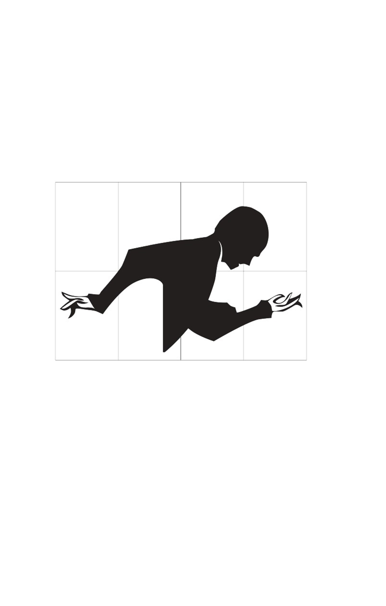
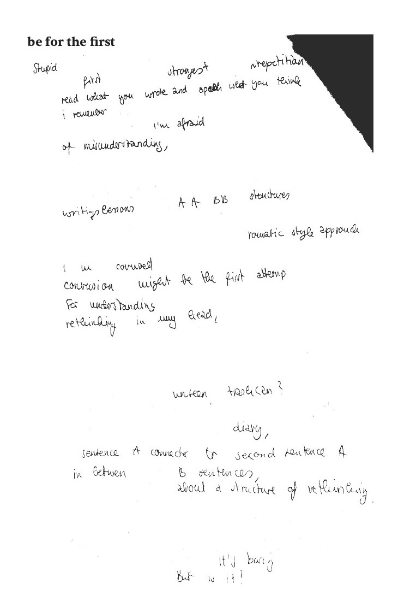
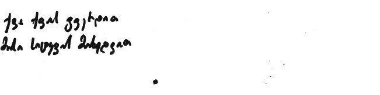
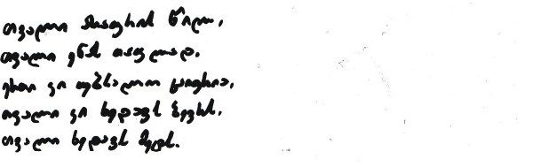

goarwywaswyt
I wrote to her: Dec 3, 2024, 10:27 PM
You sent El cuerpo queriendo descansar You sent La revolución llamando a la vuelta de la esquina You sent La nieve es vidrio picado You sent Las noticias, bombas You sent Y el privilegio, una pulga que me chupa la sangre y me mata. “The body wanting to rest Revolution calling around the corner Snow is shattered glass The news, bombs And privilege, a flea that sucks my blood and kills me.”
10.12.24
Cruzaré estas épocas para llegar a tu sueño deforme. y los vientos me cruzaran para transformarse en fractales de poesía. seré un verso roto de la cordillera volando por las des-cos- tas del mar del norte. Besaré estas épocas para volver a ser roca. o de rokha o rayo violeta cruzando el desierto de Atacama. I will cross these epochs to reach your deformed dream. and the winds will cross me to become fractals of poetry. I will be a broken verse of the mountain range flying through the un-coasts of the North Sea. I will kiss these epochs to become rock again. or from rokha or violet ray crossing the Atacama desert.
fast $ituation
hurry--- on time a n appointment— a situation ---I offer my interest there could also be time to take a small piece of fast, good stuff for myself, right? -short notice /to a part of my brain/ that has an easily out- witted spirit- even if, it doesn’t matter that much; I’m already a little late anyway. there are various interests, people circling around, hovering slightly, between and the around an option an b e t t e r option have you decided to drive in, or just at the moment lower the car window? --No, I made a decision while trying not to make one. there is no word coming back to me. -- ! -- We. 00000000000000000000000!0!!!!!!!00000000000!!!! it is a word --I can use when I’m sure. when I’m sure, I’m not thinking, i think. I‘m not thinking when I‘m writing post correction drive in for the appointment, ordering. drive out. drive in, ordering the appointment. drive OUT. d r i v e in, o r d e r i n g—--drive OUT. _ /_ _ * * I’m not driving over. so I have nothing to take away.
12.12.24
(no) hemos hecho todo lo que pudimos ni hemos entregado nuestros poemas se me olvidó lavar las llaves, colgar la loza, prender la cama, soplar los pinceles. Se me olvidó la temporada la barricada las razones y los besos y todavía no nos pagan. we have (not) done all we could neither have we submitted our poems I forgot to wash the keys, hang up the dishes, turn on the bed, blow the pencils. I have forgotten the season the barricade the reasons and the kisses and we still haven’t been paid.
17.10.24 inheriting the struggle 17.10.24 don’t waste breath to curse the damned 1.11.24 nothing, after this. you will attempt to produce meaning but there is nothing, after this. 11.11.24 i keep writing lines arrested that lead nowhere for example “to be a body carrying another body” i dream of lines that speak into whole worlds somewhere for to go and awake disenchanted standing in; lines that lead nowhere 25.11.24 and as you sit here and congratulate on good taste intellect & culture, ask: have you made yourselves once again into mon- sters?
25.11.24 they are close so close an hour ago they say in 36 hours that they are close so close to last week and the week before a month ago and during the holy month which was last year close 8.12.24 Today is a day for the living.
 the 1 there is no chance a feeling is stupid -- but it’s not my , not the . here, not everything, just enough to fracture. writing lessons: structures explained to “child-myself.” romantic style from Disney-princesses? rethinking my head: a conversation where fear is shown <unseen trashcans I’m searching— am I too personal?> :):(:0 in between two B sentences— thoughts pulled from a diary. Is it about a structure of rethinking, being built up, learning by reading some thing :=0
Ever know what happened? Ever looked back? Ever wondered what if ...? All our dead are dear. We distract ourselves, and, then, troubled we die. Sooner or later the black yeast takes over your Carrara marble and your idealized bodies will disappear. And I know for a fact that you try to preserve it, hoping it will be like the swan song? Nothing ever has been beautiful about you so, why would the last song be?
be for the first
For what it is worth mentioning, for whom it is important hearing, When I tried to take a stone with me from a morning walk, I could not move it, I could not touch it. When I tried to talk to the stone from the morning walk, it could be heard, it could hear. When I tried to take a stone with me from an evening walk, I could move it, I could touch it. When I tried to talk to the stone from the evening walk, it could not be heard, it could not hear. Where are the stone now, you ask? Everywhere... Stones reply and leave. 
While being part of something counts, one needs a reason to bounce. What used to be the source of hope, now just looks like used rope.  What happens when my story gets interrupted, and yours keeps going, on and on, like the sound waves from where I belong.
I left my room dressed up as a snail. Feel the rhythm of the valley, discover the speed of the river, slow down my participation. I step down on the conctere, step twice on the block of material First with my left foot and then with my right toes. In the same step, in the same quick thought. I drink water on an empty stomach To feel my organ, its a kind of a border. With the help of my elixir I’d call my dog a stomach, to take better care of us both. If you got a baby, puppy, what name would you give her? The name of funny nonchalance. A quest for self-awareness, a hero’s name, Grandmother’s savoir faire. Fossilization of the vital. Of Real life sensations. (with a big R) Reminiscences of love’s pleasures through a name from the past And mystery of adverbs.